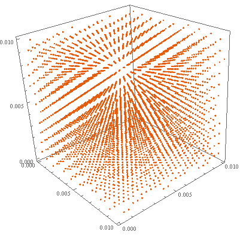
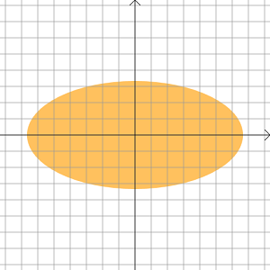
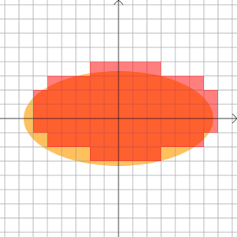
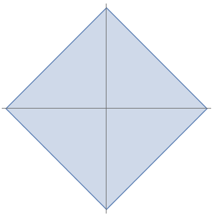
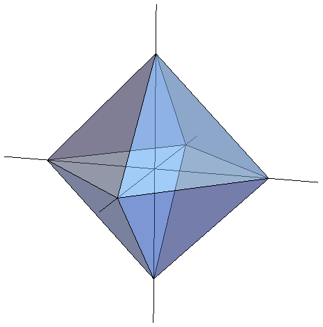

以下の定理をミンコフスキーの定理という．
$a, c, M $を整数の定数とする． $$ X_{n+1} = (aX_n + c) \bmod M $$ で$X_0$を適当に選んで数列$\\{X_n\\}$を定義する．
このような数列を生成しこれを擬似乱数として使うことを線形合同法という．線形合同法は1949年にD.H.Lehmerが考案した．
線形合同法は多次元疎結晶構造を持つという欠点が1968年にGeorge Marsagliaによって発表された．
どういうことか説明しよう．線形合同法を使って$3$次元空間の一辺の長さ$1$の立方体の中に点を打つ．すなわち， $$ U_n = X_n / m $$ と定め，点$(U_0, U_1, U_2), (U_3, U_4, U_5), \ldots$を打っていく．
すると次のような規則的な模様ができてしまう．

(なお，この図は一辺の長さ$1$の立方体全体ではなく原点付近の一辺の長さ$0.01$の立方体だけ取り出して描いている．)
したがって線形合同法をモンテカルロ法に用いるのは不適当であるとされる．
George Marsagliaが発表した事実を詳しく述べると次のようになる．
たとえば，$M$の値としてよく使われるのは$2^{32}$であるが，このとき$(n!M)^{1/n}$の値は次のようになる． ($2^{32}$という値はコンピュータのワードサイズが$32$ビットなことによる)
| $n$ | $2$ | $3$ | $4$ | $5$ | $6$ | $7$ | $8$ |
|---|---|---|---|---|---|---|---|
| $(n!M)^{1/n}$ | $92681$ | $2953$ | $566$ | $220$ | $120$ | $80$ | $60$ |
以下，この記事では，まずミンコフスキーの定理の証明を与え，次にMarsagliaの定理を証明しよう．
この証明は[2]のものである．
$2$次元の場合を証明する．この証明を一般の次元に拡張するのは容易である．
証明したいことは次だ．
$t$を正の実数とする．
まず，平面上に$x$軸と$y$軸に平行で等間隔(間隔$2/t$)の直線を無数に引く．
各$p \in \mathbb{Z}$に対し直線: $x = 2 p / t$
各$q \in \mathbb{Z}$に対し直線: $y = 2 q / t$
すると平面は面積$4/t^2$の正方形に分割される． 正方形の左下の頂点をコーナーと呼ぶことにすると正方形はそれぞれ一つのコーナー$(2p/t,2q/t)$をもつ．

コーナー$(2p∕t,2q/t)\ (p, q \in \mathbb{Z})$のうち領域$R$に属している点の個数を$N(t)$とおく．そして $$ S(t)=(4/t^2)N(t) $$ とおく．
$4/t^2$は正方形一個の面積だったので，$R$が前図のような楕円だった場合，$S(t)$は次の図で赤く塗った部分の面積になる．

すると$S(t)$は$t \to \infty$で領域$R$の面積に収束する．領域$R$の面積は$4$より大きかったので十分大きな$t$に対して $$ S(t)>4 $$ となる．
すなわち十分大きな$t$に対して$N(t)>t^2$である．このような$t$で整数であるものを一つとって固定する．
ここで部屋割り論法を使う．整数$p$と$q$を$t$で割った余りのペアは$t^2$通りある．
$N(t)>t^2$なので領域$R$に属する二つの異なるコーナー$(2p∕t,2q∕t)$, $(2p'∕t,2q'∕t)$で$p \equiv p' ,q \equiv q′\pmod{t}$となるものが存在する．
よって点 $$ ((p - p')∕t,(q - q')∕t) $$ の座標は整数となる．
領域$R$が凸集合で原点について対称なことからこの点は領域$R$に属する．
これで$R$に属する原点以外の整数座標の点の存在が証明された． □
この定理では$R$は領域と仮定した．この仮定を閉領域に置き換えた次の事実が成立する
Marsagliaの定理で使うのは次の系である．
証明．
$\lambda = (n! |\det A|)^{1/n}$とおく． $$|\xi_1|+\ldots+|\xi_n| \le \lambda$$ を満たす$(x_1, \ldots, x_n)$全体の集合を$R$とする． $n$次元横ベクトルの間の線形写像$\mathbf{x} \mapsto \mathbf{x} A$を$T$とする．
$R' = T(R)$とすると， $$R' = \{(\xi_1, \ldots, \xi_n) \in \mathbb{R}^n | |\xi_1|+\ldots+|\xi_n| \le \lambda \}$$ である．
$R'$が凸集合で原点対称な閉領域なので線形変換$T^{-1}$を施して得られる$R$も凸集合で原点対称な閉領域である．
$R' = T(R)$の関係より$R'$と$R$の体積には $$V(R') = |\det A| V(R)$$ の関係がある．
$R'$の体積を求めよう． $$R' = \{(\xi_1, \ldots, \xi_n) \in \mathbb{R}^n | |\xi_1|+\ldots+|\xi_n| \le \lambda \}$$ なので，$R'$は$2, 3$次元だと次のように，正方形，正八面体になる．

$n = 3$を例にとる．対称性より$\xi_1,\xi_2, \xi_3 \ge 0$の部分の体積を求めて$2^3$倍すればよい．
この部分の体積は $$\lambda^3 \int_0^1 \int_0^{1-x} \int_0^{1-x-y} dz dy dx$$ を計算すればよい．
結果$n = 3$のとき$V(R') = (2\lambda)^3 / 6$．
一般に $$V(R') = \frac{(2\lambda)^n}{n!}$$ となる．
よって $$V(R) = \frac{V(R')}{|\det A|} = \frac{(2\lambda)^n}{n! |\det A|}$$ であるが，$\lambda = (n! |\det A|)^{1/n}$だったので， $$V(R) = 2^n.$$ したがって閉領域$R$はミンコフスキーの定理の前提条件を満たす．ゆえに$R$には原点以外の整数座標の点が存在する． □
ではMarsagliaの定理を証明していこう．この証明はMarsaglia [1]によるものである．主張は次の通りだった．
$U_i = X_i / M$とおく．すると$0 \le U_i < 1$である．
また，$\pi_i = (U_i, U_{i+1}, \ldots, U_{i+n-1})$とおく．
定理の主張は点$\pi_0, \pi_1, \pi_2, \ldots$すべてを覆う$(n! M)^{1/n}$枚の平行な超平面族があるということである．
簡単のため，$c=0$のとき(すなわち漸化式が$X_{n+1}=a X_n \bmod M$のとき)を考える．($c=0$と限らない場合へと証明を一般化するのは難しくない)
証明は次の4ステップからなる．
$i = 0$の場合を示せば十分である．
$X_n = a^n X_0 \bmod M$である．$x \bmod M = x - M \floor{x / M}$の関係を使うと$X_n = a^n X_0 - M \floor{a^n X_0 / M}$を得る．
よって$U_n = a^n X_0 / M - \floor{a^n X_0 / M}$である．すると \begin{eqnarray} c_1 U_0 + c_2 U_1 + \ldots + c_n U_{n-1} &=& \sum_{i=0}^{n-1} c_{i+1} (a_i X_0 / M - \floor{a^i X_0 / M}) \\ &=& \frac{X_0}{M} \sum_{i=0}^{n-1} c_{i+1} a_i - \sum_{i=0}^{n-1} c_{i+1} \floor{a^i X_0 / M}. \end{eqnarray} 仮定より一個目の総和は$M$の倍数．したがってこれは整数となる． (Step 1の証明終)
Step 1より明らかである． (Step 2の証明終)
超平面$c_1 x_1 + c_2 x_2 + \ldots + c_n x_n = k$が$0 < x_i < 1 (\forall i)$なる点$(x_1, \ldots, x_n)$を通るとする．すると \begin{eqnarray} c_1 x_1 + c_2 x_2 + \ldots + c_n x_n &=& \sum_{c_i > 0} |c_i| x_i - \sum_{c_i < 0} |c_i| x_i \\ &<& \sum_{c_i > 0} |c_i|. \end{eqnarray} 同様に $$c_1 x_1 + c_2 x_2 + \ldots + c_n x_n > -\sum_{c_i < 0} |c_i|$$ なので合わせて $$-\sum_{c_i < 0} |c_i| < k < \sum_{c_i > 0} |c_i|.$$ よって整数$k$のとりうる値の個数は $$\sum_{c_i > 0} |c_i| - (- \sum_{c_i < 0} |c_i|) - 1 = \sum_i |c_i| - 1$$ である． (Step 3の証明終)
まず$c_1, \ldots, c_n$の方程式 $$c_1+c_2 a + c_3 a^2 \ldots c_n a^{n−1} \equiv 0 \pmod{M}$$ の一般解を求めよう．
$c_1, \ldots, c_n$がこの合同式を満たすとき$c_1+c_2 a + c_3 a^2 \ldots c_n a^{n−1} = M t_1$となる整数$t_1$が存在する．
$c_1$以外の項を移項して $$c_1 = M t_1 - c_2 a - c_3 a^2 \ldots - c_n a^{n−1}.$$ $c_2, \ldots, c_n$を勝手に決め，$c_1$をこの式で定めれば解になる．
よって解は $$ \begin{cases} c_1 &=& M t_1 - t_2 a - t_3 a^2 \ldots - t_n a^{n−1} \\ c_2 &=& t_2 \\ &\vdots& \\ c_n &=& t_n \end{cases} \; (t_1, \ldots t_n \in \mathbb{Z}). $$ $c_1, \ldots, c_n$がnot all zeroになるのは$t_1, \ldots, t_n$がnot all zeroでないとき．
したがってStep 4は $$|M t_1 - t_2 a - t_3 a^2 \ldots - t_n a^{n−1}| + |t_2| + \ldots + |t_n| \le (n! M)^{1/n}$$ を満たす整数$t_1, \ldots, t_n$ (not all zero)の存在を示すことに帰着した．
ところがこれはミンコフスキーの定理の系により成立する．なぜなら $$ \left| \begin{array}{cccc} M & 0 & \ldots & 0 \\ -a & 1 & \ldots & 0 \\ \vdots & \vdots & \ddots & \vdots \\ -a^{n-1} & 0 & \ldots & 1 \end{array} \right| = M $$ だからである． (Step 4の証明終)
以上でStep 1からStep 4までの証明が終わったが，この4つにより定理が導かれるのは容易にわかる． □
[1] George Marsaglia (1968) “Random Number Fall Mainly in the Planes” Proc. Nat. Acad. Sci. 61(1), 25-28
[2] G.H.Hardy and E.M.Wright (1960) An Introduction to the Theory of Numbers, Oxford University Press